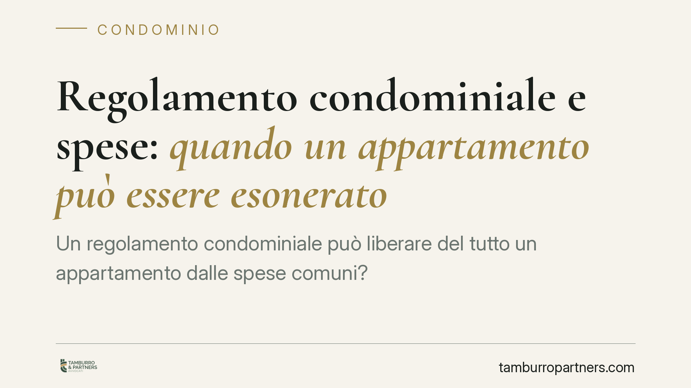

Regolamento condominiale e spese: quando un appartamento può essere esonerato
Un regolamento condominiale può liberare del tutto un appartamento dalle spese comuni? La Corte di Cassazione fissa un confine netto: l'esonero è possibile solo con regolamento contrattuale opponibile, ma la clausola che pretende di escludere l'unità dal condominio è nulla. Una distinzione che incide su rapporti di vicinato, rogiti e contenzioso.

Il caso e la questione
Accade spesso che un regolamento condominiale preveda l'esonero di una specifica unità immobiliare dal pagamento di alcune spese comuni. Tipico l'esempio del negozio al piano terra con accesso autonomo, esentato dalle spese di scala e ascensore. La domanda che la Cassazione affronta è duplice: fino a che punto tale esonero è legittimo e, soprattutto, quando è opponibile a chi acquista l'immobile in un secondo momento.
Inquadramento normativo
Il principio generale è quello dell'art. 1123 del codice civile: le spese per la conservazione e il godimento delle parti comuni si ripartiscono tra i condòmini in proporzione al valore della proprietà di ciascuno, salvo diversa convenzione. È proprio l'inciso finale ("salvo diversa convenzione") ad aprire alla possibilità di deroga.
Questa deroga richiede però un regolamento di natura contrattuale, cioè predisposto dall'originario costruttore e accettato dai singoli acquirenti nei rispettivi atti di acquisto, oppure approvato all'unanimità dall'assemblea. Il regolamento assembleare "ordinario" previsto dall'art. 1138 cod. civ., approvato a maggioranza, non basta: può disciplinare l'uso delle cose comuni e l'amministrazione, ma non può incidere sui diritti di proprietà né alterare i criteri legali di riparto senza il consenso di tutti.
Esiste poi un limite invalicabile, radicato nell'art. 1118 cod. civ.: il diritto di ciascun condòmino sulle parti comuni è connaturato alla proprietà dell'unità immobiliare. Per questo, secondo la Cassazione, la clausola che pretenda di escludere del tutto un appartamento dal condominio è nulla: si può modulare la contribuzione alle spese, non recidere il vincolo che lega l'unità alle parti comuni dell'edificio.
Esonero dalle spese: sì, ma a condizioni precise
La Corte distingue con chiarezza due piani.
Da un lato, l'esonero dalle spese — totale o parziale — è ammesso quando trova fonte in un regolamento contrattuale. In questo caso la clausola è valida perché espressione dell'autonomia negoziale delle parti.
Dall'altro, resta ferma la contitolarità sulle parti comuni: l'appartamento esonerato continua a essere parte del condominio a tutti gli effetti. Il condòmino esentato non paga determinate spese, ma non perde la qualità di condòmino né i relativi diritti.
L'opponibilità ai futuri acquirenti
Il punto più delicato riguarda la sorte della clausola quando l'immobile cambia proprietario. Perché l'esonero valga anche verso il nuovo acquirente — o, all'opposto, perché il condominio possa continuare a pretendere il contributo — la clausola deve essere opponibile ai terzi.
L'opponibilità si realizza in due modi: con la trascrizione del regolamento nei registri immobiliari, oppure mediante richiamo e accettazione espressa nel rogito di compravendita. In assenza, l'acquirente che non ne abbia avuto conoscenza non è vincolato dalla deroga.
Implicazioni pratiche
Per chi acquista un immobile in condominio, la questione non è teorica. Una clausola di esonero non trascritta né richiamata in atto rischia di non produrre effetti, con conseguente esposizione a richieste di pagamento inattese. Specularmente, chi conta sull'esenzione deve verificare che questa sia formalizzata in modo opponibile.
Per l'amministratore, la corretta lettura del titolo evita ripartizioni errate e contenzioso. Per il costruttore che predispone il regolamento originario, la trascrizione è lo strumento che mette al riparo le pattuizioni dalla successiva circolazione delle unità.
Cosa fare in concreto
- Verifica il titolo: prima di acquistare, richiedi copia del regolamento condominiale e controlla se contiene clausole di esonero e come sono formulate.
- Controlla la trascrizione: accerta se il regolamento è trascritto nei registri immobiliari o se la clausola è richiamata e accettata in un rogito.
- Fai inserire il richiamo in atto: in fase di compravendita, pretendi che notaio e parti richiamino espressamente il regolamento e la clausola rilevante.
- Distingui esonero ed esclusione: ricorda che l'unità esonerata resta condòmino; una clausola che pretenda di escluderla dal condominio è nulla.
- Fai valutare la clausola: in caso di dubbio sulla validità o opponibilità dell'esonero, sottoponi il regolamento a una verifica tecnica prima di assumere impegni.
Disclaimer
Contributo informativo a cura di Tamburro & Partners - Avv. Giuseppe Tamburro. Non costituisce parere legale.
Ogni condominio ha una storia a sé.
Se gestisci un'amministrazione e vuoi un confronto su una specifica questione condominiale, scrivi allo studio. Ti rispondiamo entro un giorno lavorativo.